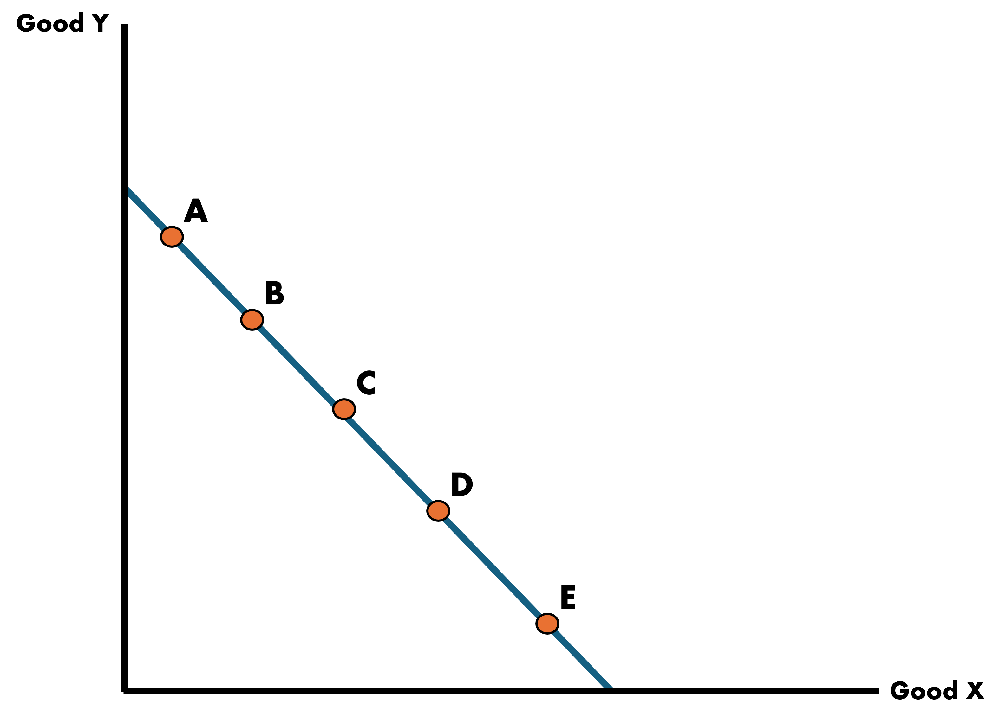
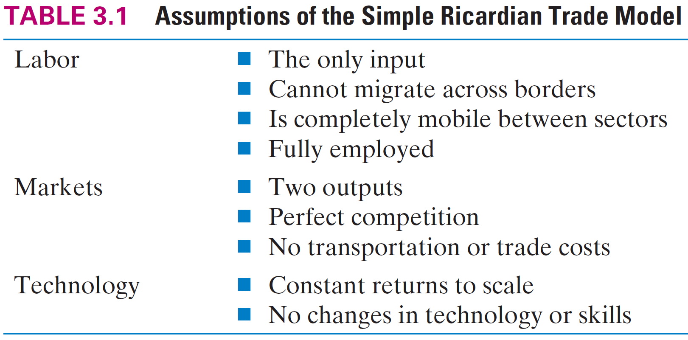
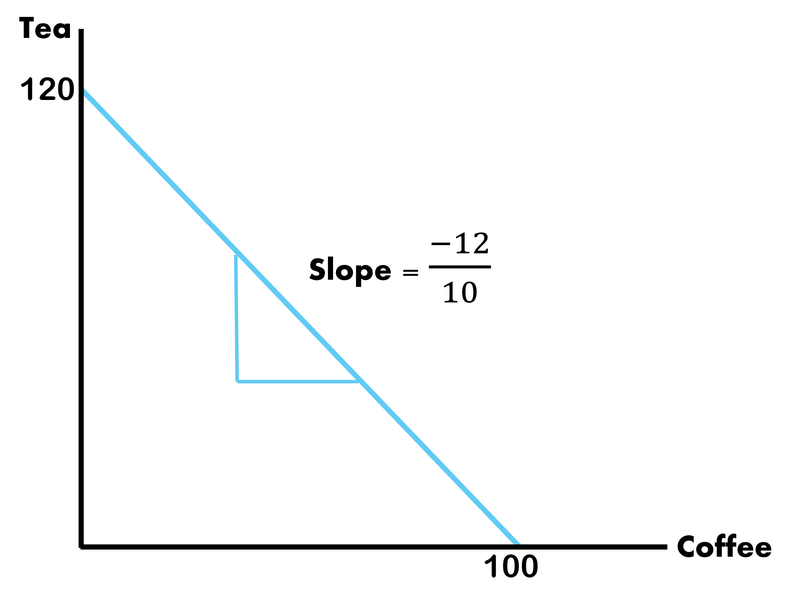

Autarky
Definition: The complete absence of foreign trade; total self-sufficiency of a national economy
To understand how trade affects national welfare, we have to understand how they do on their own
We can do this by looking at the Production Possibilities Curve (PPC)
- These show the trade-offs when a country chooses their production combination of two goods
- It is closely related to the opportunity cost of the good on the horizontal axis
Production Possibilities Curves (PPC)
For the moment, we will be dealing with PPCs that look like straight lines because we assume that the trade-off between two goods does not change
- This follows from an assumption we make on labor: Labor is homogeneous and no group of workers is more skilled than another group
. . .
How are they related to opportunity costs?
Opportunity costs are the best forgone alternative: In order to produce 1 unit of good X, the country has to give up some amount of good Y.
- Because this is a “rate of change”, we say that the slope of the PPC is the Opportunity Cost of good X
Production Possibilities Curves (PPC)
Country’s PPC Between X & Y

Production Possibilities Curves (PPC)
Country’s Bundle Choices Between X & Y

- Point A: Producing at an inefficient and wasteful level
- Point B: Efficient point of production where maximum level of output is obtained
- Point C: Infeasible. The country does not have the resources to produce at this level
How Does a Country Optimally Choose?

Choice depends on the country’s demand for the two goods
We call these Indifference Curves
Each curve shows the consumption bundles of goods that the economy can consume and be equally satisfied
The consumers are indifferent in its own preference across the bundles on a particular indifference curve
Indifference Curves

Back to the Ricardo Model
Starting with the Ricardo Model, we look at it’s primary components:
- Single Factor of Production (Labor)
- Two-Country Model (Home and Foreign)
- Technology differences across countries
We will use our own example
- Factor of production: Labor (L)
- Two Countries: Home and Foreign
- Two Goods: Coffee and Tea
- Suppose that in this case, the Home Country exports coffee and imports tea
- What would this imply about which good each country has comparative advantage in?
Ricardo Model Assumptions

Introducing some Key Variables - Marginal Product of Labor
Marginal Product of Labor (MPL): Represents the additional units of a good produced, given a one unit increase in the number of workers assigned to a particular task
. . .
The MPL for the Home Country for each good is written as \(\text{MPL}_{c}^{H}\) and \(\text{MPL}_{t}^{H}\), for coffee and tea respectively.
We can assign numbers to each such that:
. . .
\[ \text{MPL}_{c}^{H} = 9 \;\;\;\; \& \;\;\;\; \text{MPL}_{t}^{H} = 7 \]
Let’s also say that the country has a full labor force \(\bar{L} = 10\)
We will add the Foreign Country later
Home PPF
We can plot the Home PPF by finding the intercepts for each good. We can do this by multiplying the marginal product of labor by the workforce size
\[ \text{MPL}_{\text{good}}^{\text{country}} * \bar{L} \]
The Home Country produces
\[\begin{align*} Q_{\text{coffee}}^{H} &= 9 * 10 = 90 \\ \\ Q_{\text{tea}}^{H} &= 7 * 10 = 70 \end{align*}\]

Home PPF
Assume: PPF is a straight line due to the constant MPLs
Slope of PPF: Equal to the marginal rate of substitution between goods (Coffee & Tea)
\[ \text{Slope of PPF}^{H} = -\dfrac{\text{MPL}_{t}}{\text{MPL}_{c}} = -\dfrac{7}{9} \]
This is also the Opportunity Cost of coffee. So we can say that if we want one more unit of coffee we must trade off tea at a rate of \(\dfrac{7}{9}\)
Equivalently, the opportunity cost of tea would be \(\dfrac{9}{7}\) units of coffee
Home Prices
We can determine prices in the country from this information as well. We assume to be under Perfect Competition which means that all goods are sold at cost.
Prices
These are in terms relative to both goods and measured in units:
\[ P_{c}^{H} = \dfrac{\text{MPL}_{t}}{\text{MPL}_{c}} = \dfrac{7}{9} \;\;\;\;\; \& \;\;\;\;\; P_{t}^{H} = \dfrac{\text{MPL}_{c}}{\text{MPL}_{t}} = \dfrac{9}{7} \]
Home Wages
We use the Perfect Competition assumptions to also determine wages
Wages
Workers are paid the equivalent of their MPL times the price of that additional unit they produce:
\[\begin{align*} \text{wages}_{\text{coffee}} &= \text{P}_{\text{coffee}} * \text{MPL}_{\text{coffee}} \\ \\ \text{wages}_{\text{tea}} &= \text{P}_{\text{tea}} * \text{MPL}_{\text{tea}} \end{align*}\]
Home Wages Across Industries
Additionally, because we assume that labor moves freely between industries, we can assume that wages are equalized across industries
\[ \text{wages}_{\text{coffee}} = \text{P}_{\text{coffee}} * \text{MPL}_{\text{coffee}} = \text{P}_{\text{tea}} * \text{MPL}_{\text{tea}} = \text{wages}_{\text{tea}} \]
. . .
We can rearrange this such that the price ratio is equal to the MPL ratio
\[ \dfrac{\text{P}_{\text{coffee}}}{\text{P}_{\text{tea}}} = \dfrac{\text{MPL}_{\text{tea}}}{\text{MPL}_{\text{coffee}}} \]
Relative price of coffee is equal to the Opportunity Cost of coffee at the autarky/no-trade equilibrium
Foreign PPF, Prices, and Wages
We can find the Foreign Country results as well
Find them for yourself and we will pick it up next class. Let:
\[ \text{MPL}_{c}^{F} = 10 \;\;\;\;\; \& \;\;\;\;\; \text{MPL}_{t}^{F} = 12 \;\;\;\;\; \& \;\;\;\;\; \bar{L} = 10 \]
Tasks
Graph the Foreign Country PPF
Slope of \(\text{PPF}\)
Opportunity Cost of coffee and tea
Prices for both goods
Read Ch.3.1 to Ch.3.3
Foreign Country
Foreign PPF

Opportunity Costs
- Coffee: \(\dfrac{12}{10}\) \(\;\;\) & \(\;\;\) Tea: \(\dfrac{10}{12}\)
Prices
- Coffee: \(\dfrac{12}{10}\) \(\;\;\) & \(\;\;\) Tea: \(\dfrac{10}{12}\)
Who has the Advantage?
Now we have two countries, we can begin to compare their Marginal Productivities of Labor
A nation has the Absolute Advantage in a good if they produce more per labor input
A nation has the Comparative Advantage if the Opportunity Cost of producing a good is lower than that of the other country
Absolute Advantage: Foreign in both
Comparative Advantage: Home in Coffee | Foreign in Tea